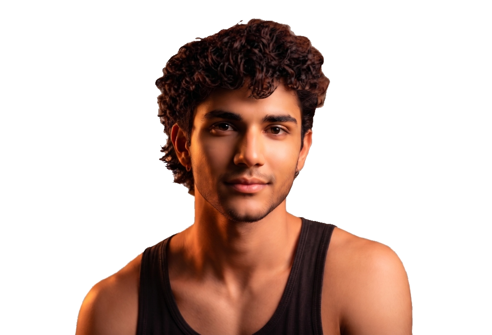

CREATIVE

Transform your visuals with pro filters & studio tools
From tone & exposure to precise filters — tune colors and export studio-quality visuals in seconds, directly in your browser.
Start Editing Free
CREATIVE
STUDIO
Core Filters
10+ Realtime
Quality Loss
0% Canvas
Your Studio for Visual Mastery
↗
Pure client-side GPU processing. Zero image uploads to external servers for 100% privacy and max resolution.